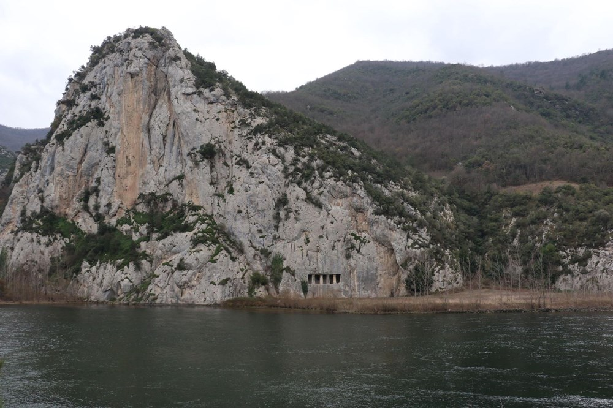

Samsun'un Bafra ilçesinde Helenistik Çağ'da inşa edilen Asarkale ve kaya mezarları, yoğun ilgi görüyor. En
çok ilgiyi ise 2 bin 300 yıllık Paflagonya dönemine ait mezarlar çekiyor.
Bafra ilçe merkezine 26 kilometre uzaklıktaki Asarkale ve kaya mezarları, kente gelen yerli ve yabancı
turistlerin ilgisini çekiyor.
Helenistik Çağ'da inşa edilen, Roma, Bizans ve Osmanlı dönemlerinde de tadilattan geçirilerek kullanılan
Asarkale ve kaya mezarları arasında en çok ilgiyi ise kayaların oyulması ile yapılan 2 bin 300 yıllık
Paflagonya dönemine ait mezarlar çekiyor.

Çok değerli tarihi kalıntıların yer aldığı Asarkale bölgesinin önemli bir turizm alanı olduğunu söyleyen
Karadeniz Turistik İşletmecileri Derneği Başkanı Murat Toktaş, "Turizm denince akıllara kum, güneş ve deniz
geliyor. Bir türlü kum- güneş- deniz üçlemesinden çıkamadık.
Aslında alternatif turizm dediğimiz tarih turizmi olsun, doğa olsun, avcılık olsun, bunlara benzer turizm
dalları varken, biz o kısır döngü içinde dönüp duruyoruz. Aslında bunun dışına çıkabilsek, tarihi anlamda
çok güzel değerlerimiz var.
Özellikle bölgemizde hem kalemiz olsun, hem kral mezarlıkları olsun, Bafra bölgesinde ciddi anlamda tarihi
değer içeren ve yurt dışında pazarlamasına çıkıldığı zamanda çok ciddi talep görecek bir değerimiz var"
dedi.
Bu bölgeye giden insanların çok fazla etkilendiği söz konusu oluyor. Bizim buraları bir şekilde ön plana
çıkarmamız gerekiyor. İnsanları buralara daha çok getirebilsek, Bafra bölgesinin kaderini değiştirecek
önemli taşlardan biri olur” diye konuştu.